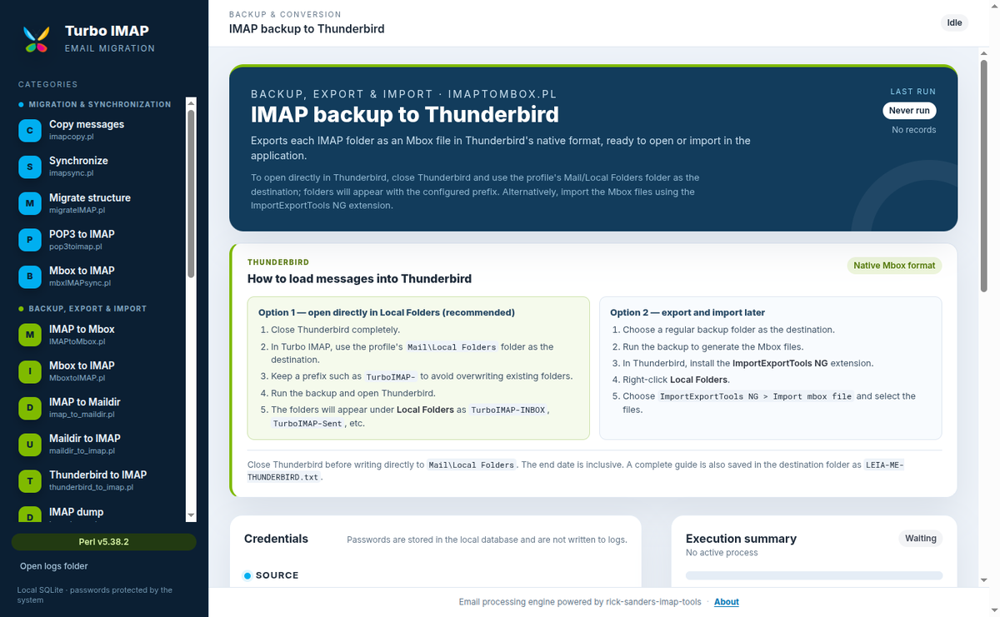
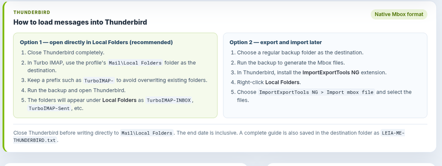
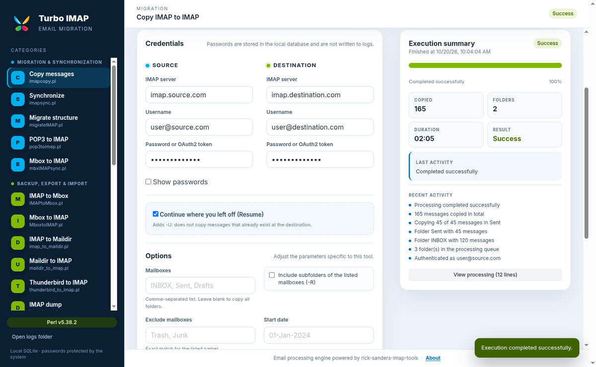

Accounts and rules change
Storage limits, closed accounts and policy changes can block access to your history. A local backup keeps everything accessible.
Local backup · IMAP + POP3
Back up, migrate and preserve messages from Gmail, Outlook/Microsoft 365, Yahoo Mail and any webmail that supports IMAP or POP3 — with a graphical interface and no command line.

Works with webmail providers that offer IMAP or POP3
Third-party trademarks belong to their respective owners. Turbo IMAP is not affiliated with or endorsed by these services.
Why back up
An email account holds years of work, receipts, conversations and contacts. A local copy is the safest way to avoid depending on an external service's rules, storage or availability.
Storage limits, closed accounts and policy changes can block access to your history. A local backup keeps everything accessible.
Copy entire mailboxes between Gmail, Outlook/Microsoft 365, Yahoo Mail and other providers, preserving messages and folder structure.
Export to Mbox, Maildir or Thunderbird and open it whenever you want, even without internet or access to the original account.
Features
25 tools for backup, migration, cleanup and diagnostics, with guided forms, progress, logs and local history.
Download entire mailboxes or only the period you need.
Copy and synchronize accounts without losing folders, flags or messages.
Export to local formats and open in Thunderbird or another client.
Use start and end dates for incremental backups and partial migrations.
Continue where you left off and avoid copying messages that already exist.
Remove duplicates, empty folders and manage trash safely.
Sizes, folders, server capabilities, ping and OAuth2 testing.
Friendly summary, complete terminal output and log files for every run.
Credentials in local SQLite, passwords kept out of logs and isolated IPC.
How it works
You don't need to memorize Perl parameters. Turbo IMAP builds the commands, validates the fields and tracks every step.
Install on Windows or use the Linux/macOS package. On Windows, Perl is already included.
Specify the source server and destination — another IMAP account, a local folder or Thunderbird.
Select folders, dates and resume options. The app validates everything before running.
Watch the summary, progress and log. When it finishes, the backup is ready to keep or open in Thunderbird.
Thunderbird
Thunderbird uses Mbox as the native format for Local Folders. Turbo IMAP exports one IMAP folder per Mbox file, preserving message content.
Mail\Local Folders profile.
TurboIMAP- to avoid overwriting existing folders.
TurboIMAP-INBOX, TurboIMAP-Sent, etc.
Prefer to import later? Use the ImportExportTools NG and import the Mbox files from Local Folders.

Interface
Guided forms, a friendly summary and the complete terminal when you need it.

Downloads
Choose your operating system. All files are on the official GitHub release.
Windows 10/11 · x64
NSIS installer. Includes portable Strawberry Perl and native SQLite.
Download for Windowsx64 distributions · AppImage
Portable AppImage. Requires perl in PATH.
Macs with Intel processors
Application zip. Requires perl in PATH.
Macs with M1, M2, M3 or newer chips
Application zip. Requires perl in PATH.
Notes: on Linux, make the AppImage executable with
chmod +x. macOS packages are unsigned zips; Gatekeeper may ask for confirmation. The Windows installer is also unsigned, so SmartScreen may show a warning.
Frequently asked questions
Yes. The app works with any account that allows IMAP or POP3, including Gmail, Outlook/Microsoft 365, Yahoo Mail, iCloud Mail, Zoho Mail and Fastmail. The provider may require an app password or OAuth2 authentication.
On Windows, no: the installer includes portable Strawberry Perl. On Linux and macOS, you need perl available in
PATH.
No. Processing happens on your computer. Credentials are stored in the local SQLite database, protected by safeStorage of Electron when available, and are not sent to project servers.
Yes. Copy and backup tools accept start and end dates in DD-MMM-YYYY, allowing you to export only the desired range.
Yes. Turbo IMAP exports Mbox files in Thunderbird's native Local Folders format. You can also import the files with the ImportExportTools NG extension.
Yes. The app is open source and distributed under the MIT license. The original Perl scripts keep the license of the rick-sanders-imap-tools .
Start now
Download Turbo IMAP, enter your account and make a local copy of the messages that matter.